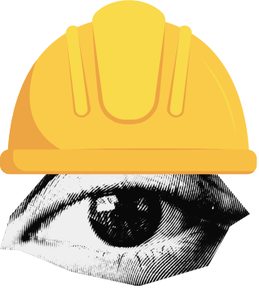

يصف ويتنبأ
يحوّل البيانات إلى فهم للماضي وتوقع للمستقبل.

منظور صناعيعندما يلتقي فهم الأنظمة بقوة البيانات، لا نكتفي بمعرفة ما سيحدث؛ بل نحدد ما الذي ينبغي فعله.
01 ingest operational_data
02 predict future_state
03 optimize best_action
04 measure real_impact
الفارق الحقيقي
يحوّل البيانات إلى فهم للماضي وتوقع للمستقبل.
يكتشف الأنماط ويؤتمت مهامًا معرفية معقدة.
يربط التوقع بالقيود والموارد والأهداف ليصنع أثرًا.
دورة القرار
حدّد الهدف، أصحاب المصلحة، تدفق العملية، القيود ومقياس النجاح. السؤال الجيد يسبق البيانات الجيدة.
تطبيقات حقيقية
نموذج يتنبأ بالكميات، ثم خوارزمية تحدد متى وكم نطلب ضمن تكلفة ومستوى خدمة مستهدف.
تقدير تدفق المرضى مسبقًا ثم توزيع الكوادر والأسِرّة لتقليل الانتظار.
رؤية حاسوبية تفحص المنتج لحظيًا، مع نظام جودة يتتبع السبب ويمنع تكراره.
تقدير احتمال العطل ثم اختيار نافذة الصيانة المثلى دون تعطيل الخطة الإنتاجية.
تحليل سجلات الأنظمة لبناء خريطة العملية الفعلية، وكشف الانحرافات وفرص التحسين.
قرارات مسار ديناميكية تراعي الطلب، المرور، سعة المركبات ونوافذ التسليم.
عدة المهندس الصناعي الذكي
التميّز لا يأتي من أداة منفردة، بل من الجمع بين فهم المجال، وبناء النموذج، وصناعة القرار.
Process Mapping · KPIs · Systems Thinking
Python · SQL · Statistics · Machine Learning
OR · Simulation · Prescriptive Analytics
مسار التعلّم
الاحتمالات، الاستدلال، الجبر الخطي وأساس التحسين.
جمع البيانات وتنظيفها وتحليلها وتصويرها.
نماذج التنبؤ والتصنيف والتقييم بعيدًا عن حفظ الخوارزميات.
تحويل التنبؤ إلى قرار واختبار أثره قبل التنفيذ.
مشكلة واقعية، نموذج، قرار، ومؤشر أثر واضح.